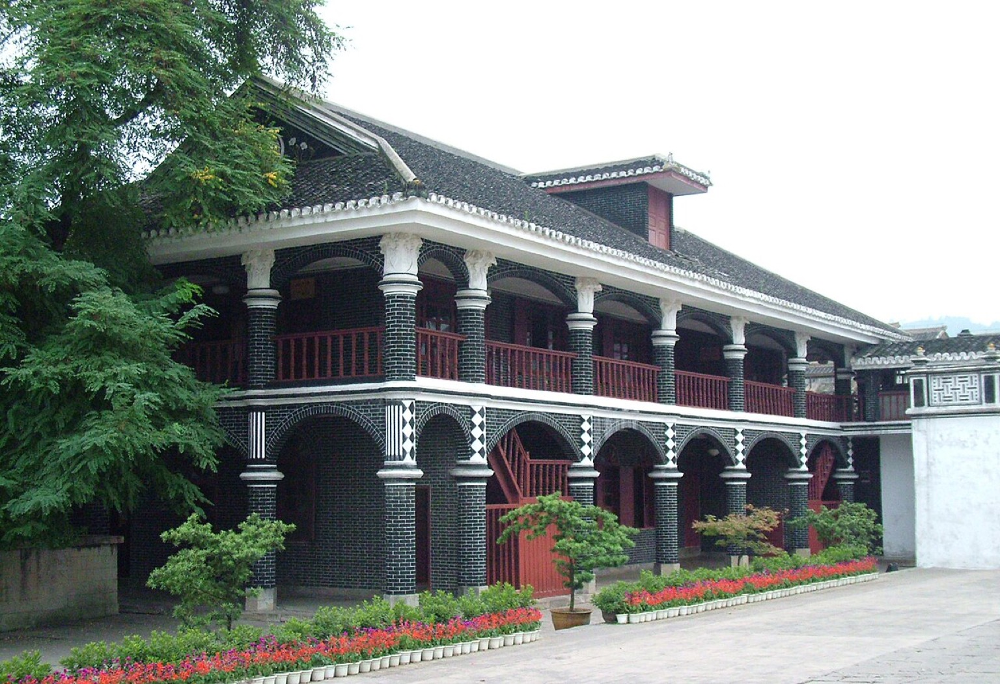

突破乌江
1935 年 1 月初，红军强渡乌江天险，江面竹筏与对岸枪声织成一幅惊险画卷。1 月 7 日先头部队智取遵义城，为随后召开的会议赢得了一个难得的喘息窗口。
红色地点 · 03 / 13
生死转折 · 遵义会议召开地
1935 · 1 · 贵州遵义
1935 年 1 月，中央红军突破乌江天险占领遵义。15 日至 17 日，中共中央政治局扩大会议在城里一栋二层小楼里召开，三天时间，在极端危急的历史关头挽救了党、挽救了红军、挽救了中国革命。

「雄关漫道真如铁，而今迈步从头越。」
—— 毛泽东《忆秦娥·娄山关》，1935 年 2 月
1935 年 1 月初，红军强渡乌江天险，江面竹筏与对岸枪声织成一幅惊险画卷。1 月 7 日先头部队智取遵义城，为随后召开的会议赢得了一个难得的喘息窗口。
遵义会议在柏辉章公馆二楼客厅召开。会议批判了「左」倾军事路线，增选毛泽东为政治局常委，事实上确立了他在党中央和红军的新的领导地位——这是党史上一个生死攸关的转折点。
会议之后，红军四渡赤水、南渡乌江、巧渡金沙江，在几十万敌军的缝隙间机动穿插，彻底跳出包围圈。遵义小楼里作出的抉择，在此后的行军路线上一步步得到验证。
精神传承
会址木楼依旧，墙上挂钟停摆于历史的那一刻。转折之城的每一条街巷，都在提醒后来者：实事求是，是最大的勇气。